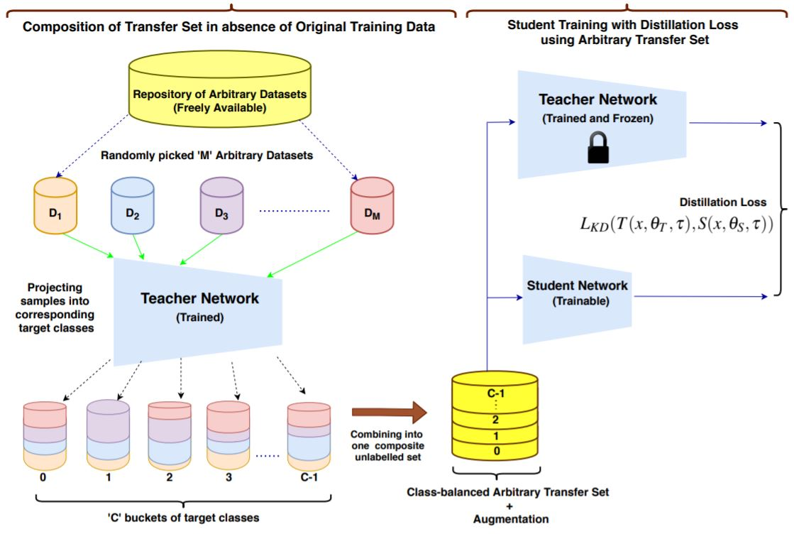
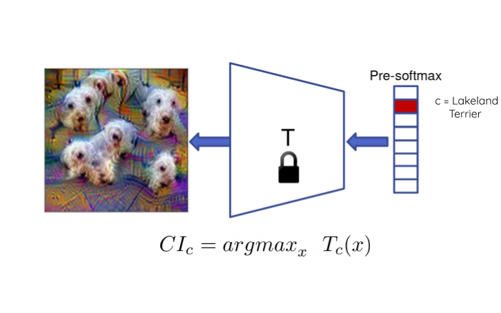
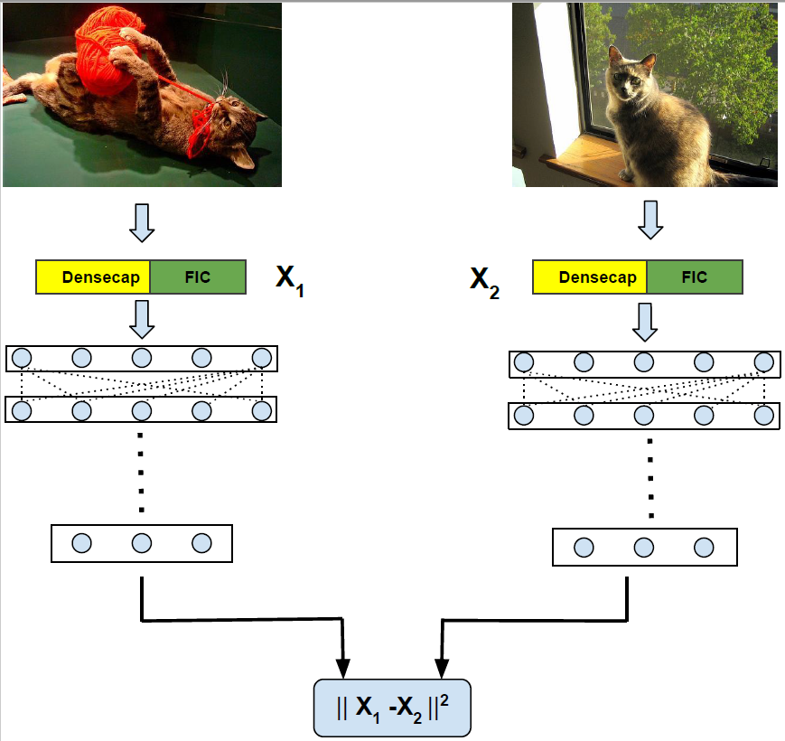
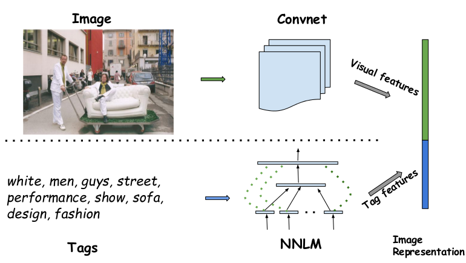
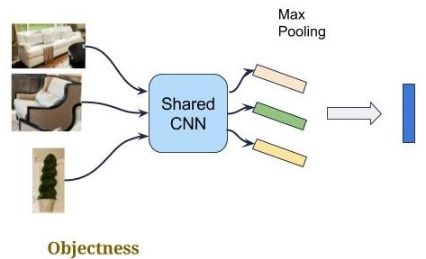

Research related to the Interpretability aspect of DNNs
|  |
Konda Reddy Mopuri*, Gaurav Kumar Nayak*, Anirban Chakraborty WACV, 2021 Knowledge Distillation is an effective method to transfer the learning across deep neural networks. Typically, the dataset originally used for training the Teacher model is chosen as the "Transfer Set" to conduct the knowledge transfer to the Student. However, this original training data may not always be freely available due to privacy or sensitivity concerns. In such scenarios, existing approaches either iteratively compose a synthetic set representative of the original training dataset, one sample at a time or learn a generative model to compose such a transfer set. However, both these approaches involve complex optimization (GAN training or several backpropagation steps to synthesize one sample) and are often computationally expensive. In this paper, as a simple alternative, we investigate the effectiveness of "arbitrary transfer sets" such as random noise, publicly available synthetic, and natural datasets, all of which are completely unrelated to the original training dataset in terms of their visual or semantic contents. Through extensive experiments on multiple benchmark datasets such as MNIST, FMNIST, CIFAR-10 and CIFAR-100, we discover and validate surprising effectiveness of using arbitrary data to conduct knowledge distillation when this dataset is "target-class balanced". We believe that this important observation can potentially lead to designing baselines for the data-free knowledge distillation task. |
|  |
Konda Reddy Mopuri*, Gaurav Kumar Nayak*, Vaisakh Shaj*, Anirban Chakraborty, R. Venkatesh Babu ICML, 2019 PDF / Codes We aim to develop novel data-free methods to train the Student from the Teacher. Without even using any meta-data about the target dataset, we attempt to synthesise the synthetic samples (Data Impressions) from the complex Teacher model and utilise these as surrogates for the original training data samples to transfer its learning to Student via knowledge distillation. Therefore, we dub this procedure "Zero-Shot Knowledge Distillation". |
|  |
Konda Reddy Mopuri, Vishal B Athreya, R. Venkatesh Babu SPCOM, 2018 [Best Paper] Link Tasks such as scene retrieval suffer from features learned from label-level weak supervision and require stronger supervision to better understand the contents of the image. In this paper, we exploit the features learned from caption generating models to learn novel task specific image representations. In particular, we consider captioning system and the dense region description model and demonstrate that, owing to richer supervision provided during their training, features learned by them better than those of CNNs trained on object recognition. |
|  |
Konda Reddy Mopuri, R. Venkatesh Babu ICVGIP, 2016 Link we attempt to enrich the image representation with the tag encodings that leverage their semantics. Our approach utilizes neural network based natural language descriptors to represent the tag information. By complementing the visual features learned by convnets, our approach results in an efficient multi-modal image representation. |
|  |
Konda Reddy Mopuri, R. Venkatesh Babu Deep Vision Workshop, CVPR, 2015 we demonstrate the effectiveness of the objectness prior over the deep CNN features of image regions for obtaining an invariant image representation. The proposed approach represents the image as a vector of pooled CNN features describing the underlying objects. This representation provides robustness to spatial layout of the objects in the scene and achieves invariance to general geometric transformations, such as translation, rotation and scaling. |